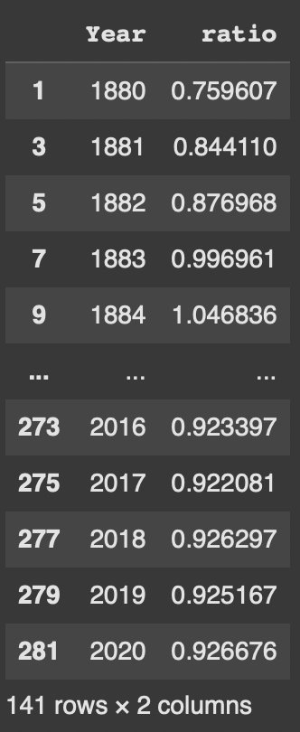

ISTA322 Fall 2025
The style of questions are similar to previous quizzes and homework. You have to answer simple questions or write piece of code to deliver the requested information. We are going to use the datasets that we seen before, however, you won't have a working notebook, and you must type in your answer. Simple mistakes and typos will be excused. You should also expect short answer questions from the lectures.
The operations that you should know is limited to what we have practiced in the notebooks. We will use the similar data/databases.
1- [notes] Types of data (structured, unstructured, semi-structured) and their examples
2- [notes] Pyramid of needs
3- [notes] ETL and examples
4- [notes] Data Types and formats
5- [notes] Data Transform
6- [notes] Data aggregation and Join
7- [notes] JSON transform and Flattening
8- [notes] SQL (select, group by, having, order by, join, nested query)
9- [notes] Programming Notes
Given the price dataframe (only the head is shown here), write a code to find the average closing price between 2010-01-01 and 2020-01-01.
| Date | Open | High | Low | Close | Adj Close | Volume | |
|---|---|---|---|---|---|---|---|
| 0 | 1997-05-15 | 2.437500 | 2.500000 | 1.927083 | 1.958333 | 1.958333 | 72156000 |
| 1 | 1997-05-16 | 1.968750 | 1.979167 | 1.708333 | 1.729167 | 1.729167 | 14700000 |
| 2 | 1997-05-19 | 1.760417 | 1.770833 | 1.625000 | 1.708333 | 1.708333 | 6106800 |
| 3 | 1997-05-20 | 1.729167 | 1.750000 | 1.635417 | 1.635417 | 1.635417 | 5467200 |
| 4 | 1997-05-21 | 1.635417 | 1.645833 | 1.375000 | 1.427083 | 1.427083 | 18853200 |
Using the following dataset, find the ratio of male to female babies over the year. Write down the appropriate code.
baby = pd.read_csv('https://docs.google.com/spreadsheets/d/18WZQ8JB03qRIsG6R2_-nhdrU9erAzRvcMwYGtzTWx-w/gviz/tq?tqx=out:csv')
Write a series of statements to construct a data frame that only contains the Year and Female to Male ratio based on the baby name data. Sort the data frame based on Year and write the code to plot the ratio vs year.
Sample output:

Data Aggregation:
SUM,
AVG, COUNT, etc.) based on the data
and the analysis required.
GROUP BY clause when using
aggregation functions to specify the grouping criteria.
HAVING to filter aggregated data based on
conditions.
Join:
JOIN,
LEFT JOIN, RIGHT JOIN) based on the
relationship between the data you need.
json_normalize) to flatten nested JSON structures
into tabular data.
SELECT:
GROUP BY:
GROUP BY to aggregate data into groups based on
one or more columns.
GROUP BY clause or are used within an aggregate
function.
HAVING:
HAVING to filter aggregated data, applying
conditions to groups rather than individual rows.
ORDER BY:
ORDER BY to sort the results based on one or
more columns.
ASC for ascending,
DESC for descending) if needed.
JOIN:
Nested Query:
FROM clause to create derived
tables for further manipulation.